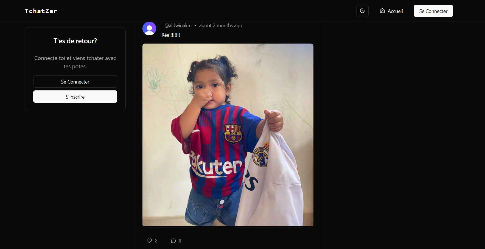
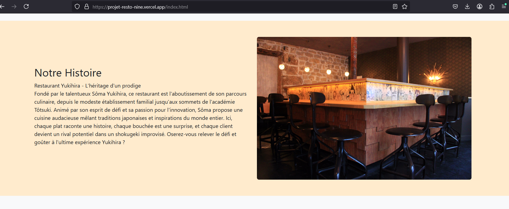
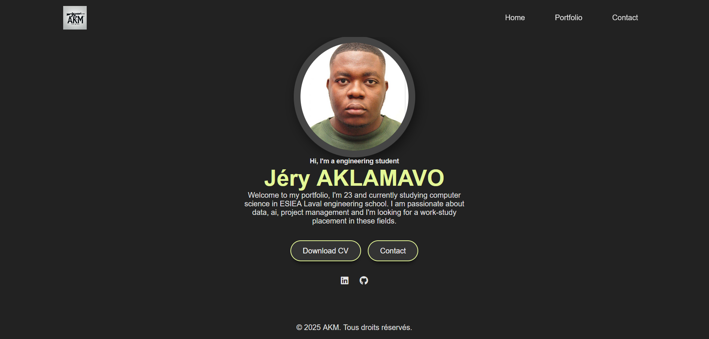
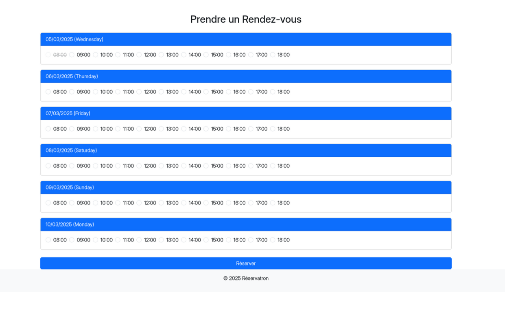
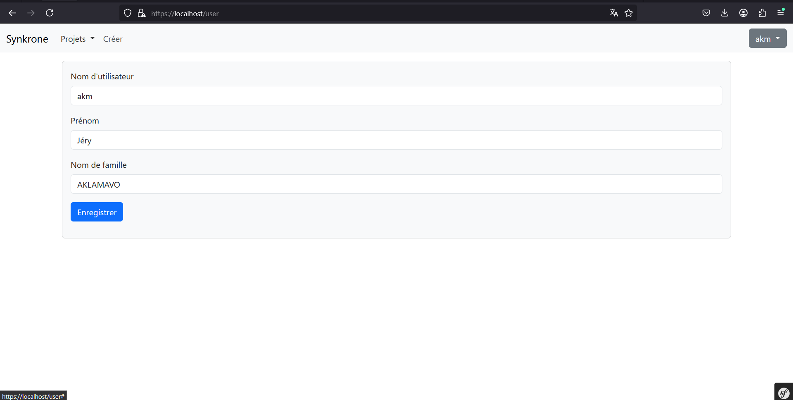

Tchatzer
A complete social media platform built with Next.js, Prisma, Neon, and Clerk. Written in TypeScript for a modern, fast, secure, and responsive experience.

Restaurant Yukihira
"It is a restaurant website that highlights the establishment’s culinary offerings, ambiance, and reservation options.

Création de base de données
Il s'agit de la création d'une base données sous access pour la gestion de stock d'une entreprise

Portfolio
A minimalist personal website designed to showcase my projects, identity, and skills with responsive design and clean UI.

FastApi
It's an application using FastAPI, React, and MongoDB which make to-do lists

Système de réservation
An online appointment scheduling system built with PHP and MariaDB.

Synkrone
A project management app made with symphony, docker, vue.js, mysql, github actions and deployed with portainer